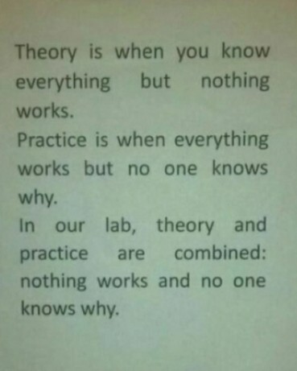
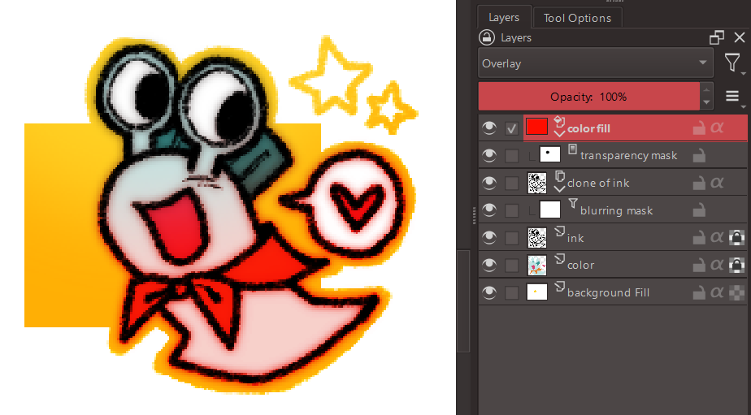
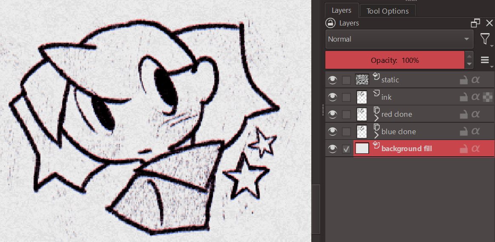
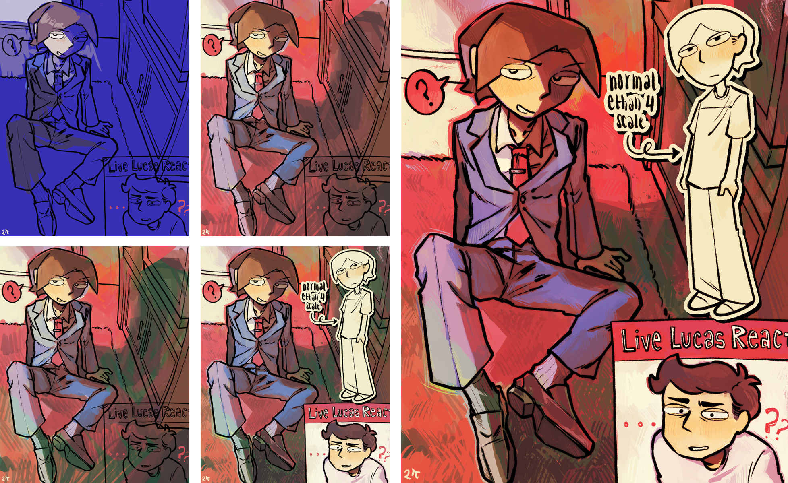
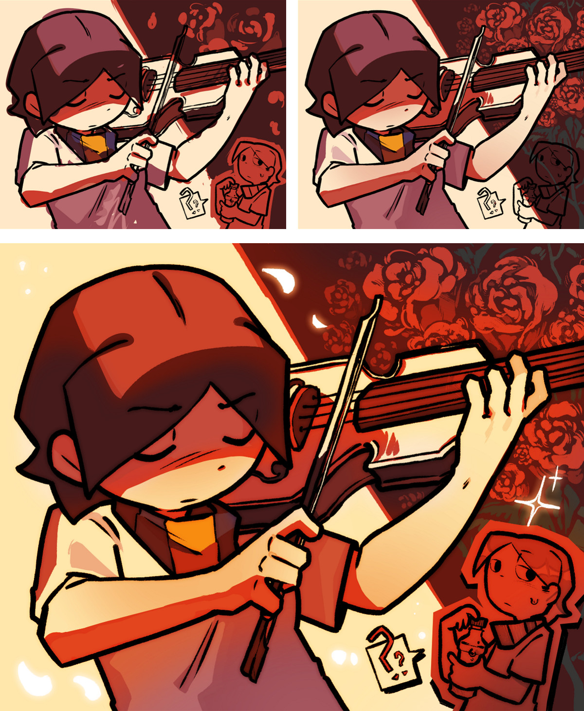
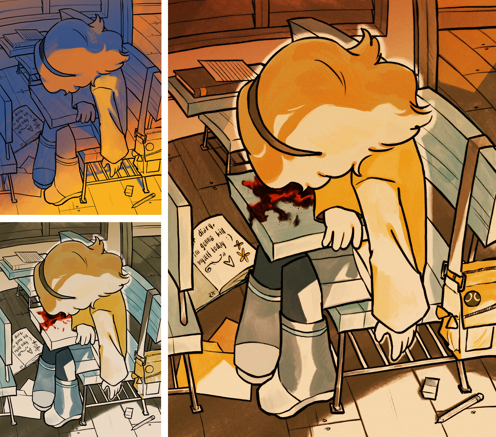

Occasionally I get messages from people asking me how I go about my coloring. Well you're in luck because this blog post is dedicated to all of you! To be quite frank, I have no idea what I'm doing. Art is and will always be a hobby for me. It is something I do to pass the time and I don't take it all that seriously. Regardless, I will try my best to articulate my thought process - if even existent.
I strongly advise against using any sort of simplified content viewer for this post since I will be heavily utilizing css and js for the demonstrations.
In Theory
Although it is mostly subconscious, there are a few ideas that float around my head as I try to approach a piece. This is a general outline of those ideas.
Abandon everything you know about colors because it is a LIE! What surrounds a color can effect how we perceive it. The same color can look like they have a different hue, saturation or brightness.
Believe it or not tile A and tile B is the same shade of gray! One is perceived lighter than the other due to the tiles surrounding them
Below is a linear demonstration of this phenomenon. The gray line appears darker against a white background and lighter in a black background.
It becomes more complex when the hue is taken into consideration. Grays may look more warm against cold colors and vice versa.
Pick Out Colors
The main thing to take away from this is that colors don't mean anything on its own. The things you surround it with will dictate how our eyes interpret them.
Hue Shifting
Hue shifting is a common technique, especially for pixel art. Instead of just choosing a darker version of the base color, you slightly change the hue. This makes the pallette a little more interesting.
Without Hue Shifting
With Hue Shifting
Pick Out Colors
For clarification, the pallette without hue shift isn't automatically bad. It's just something you can keep in mind when you want your colors to have a bit more variation.
Saturation
Saturation refers to the vibrance or intensity of color. Although the hue shifting helps, using it to much makes your art look kind of rubbery. Your eyes typically can't perceive colors in the dark, so try making the shaded area a bit more desaturated.
Contrast
Contrast refers to the perceived brightness/darkness of a color and is often overlooked part of coloring. You can pretty much make any color look good with each other if you get the contrast right. Try checking your artwork in grayscale and see if your art is still discernible. Colors of different hues and saturation can still have the same kind of contrast.

In Practice
Of course there is always a disparity between theory in practice. A lot of stuff I talked above isn't something I'm always been conscious of. I find actually taking the time to color is far more effective for learning.
Examples in my Art
Upon first inspection the yellow base might seem weird but, when you put it into grayscale, you can see that it is the same contrast as the white. The yellow gives the drawing an overall warm and energetic feel. Every other color in the drawing has to be adjusted to fit this bold base, which is why the dark blue is more of a desaturated purple and the light blue is actually a greyish green.
I had this strange phase where I would use a lot of black to shade. I think it's pretty neat since it could be used emphasize the differences of something. In this case all the foreground elements is contrasts strongly with the bright blue background.
This is a simple drawing of two shadowy figures. Although I could of easily colored both the figures and the aura around them the same shade with white colored line art, I opted to instead make the figures a lighter shade of blue. I also added a few hue shifts of a bright warm shade of pink to give subtle hints of shape.
If you have a stylized artstyle, you can get away with nonsensical lighting. I am a big fan of choosing the more visually appealing choices over the realistic ones.
Digital Art Techniques
Although I am not fond of the teaching method of giving out exact step by step process, someone out there will undoubtedly inquire about it. Might as well highlight some specific techniques I apply for digital art, the medium I use the most.
Blurring Line art
If you want to give you art a softer look, you can clone your line art and blur it with a lower opacity. Alternatively, you can clone the entire image instead - following the same steps of blurring and lowering the opacity. It gives it a dreamier feel.
Overlaying Colors
Krita comes with a bunch of blending modes, but I mostly use the overlay and multiply. You can use it to cover the whole drawing to unify the colors or just use it in small portions to give subtle hue shifts.
I wouldn't use these techniques as harshly as shown below. It's just exaggerated for the sake of demonstration.

Adding Textures
If you want to give your art a little more grit, you can overlay a textured image with the blending mode set to multiply or overlay. If you want to replicate that paper look, gently sketch over random parts of the drawing to give the texture more depth. You can also try cloning the ink with magenta and cyan copies that are slightly offset in opposite directions - creating a subtle anaglyph like effect. This gives out an illusion of a scanned imaged edited to have sharper edges.

My Process :3
I typically like to start of with a single color to figure out what kind of vibe I want to give. Sometimes it takes a few tries before I find something I like. After that I messily add more colors relative to whatever I choose as a base. Once I'm contented with the rough idea, I polish it out and experiment with some overlays.
I really am not that good at explaining so I hope the media I've attached below will make more sense.



Conclusion
As I've stated in the beginning of this post, I am no means an expert. A lot of what I've learned is from years of throwing stuff at a wall and hoping it will stick. The things written here shouldn't treated as some sort of ultimate rule. Instead it should be used as stepping stones to whatever you're trying to achieve. You should do whatever the hell you want! The world isn't gonna explode if you mix random colors, so do as much as you can! Experiment, analyze other's works, fail and succeed. Art is a lot of fun and you should let yourself enjoy the process.
Anyways, that's all I have for today. I wish all of you the bestest of luck with your art endevours!!! (/≧▽≦)/ ･:*:･ﾟ☆｡